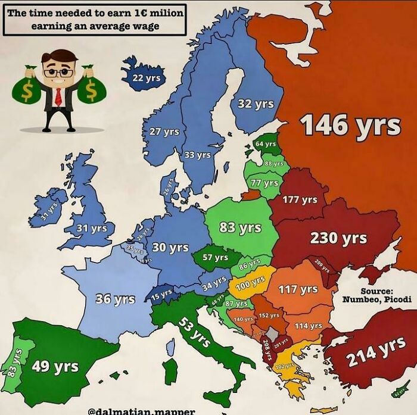
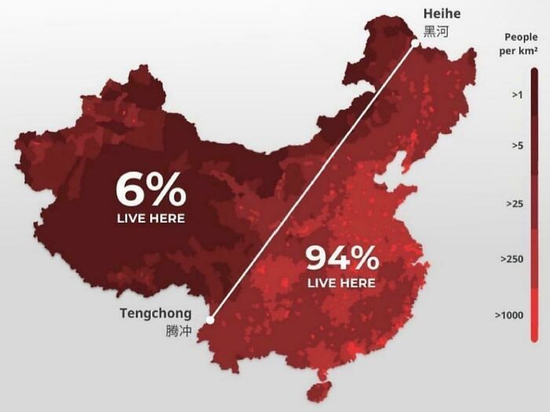
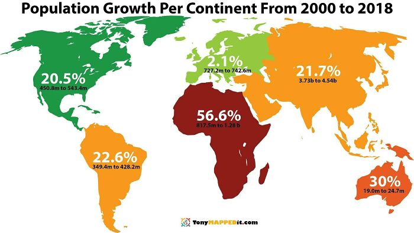
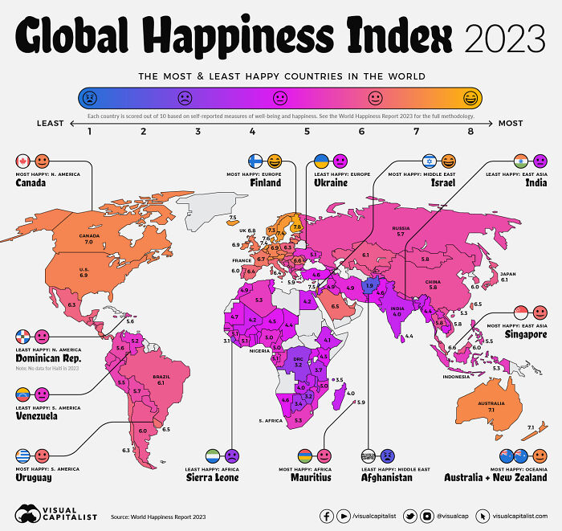
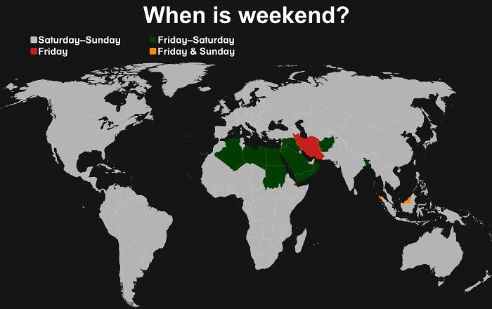

Conceitos
Fique por dentro:
Conheça os principais conceitos da geopolítica.
É a disciplina que estuda as relações de poder entre Estados, organizações e povos, considerando a influência do espaço geográfico, dos recursos naturais e da economia.
É o direito exclusivo de um Estado exercer autoridade sobre seu território, tomando suas próprias decisões políticas e administrativas.
É uma entidade política governada por um povo que compartilha cultura e história, organizada dentro de um território.
Acontece quando uma nação possui influência dominante sobre outras, exercendo grande poder econômico, político, militar ou cultural.
É a capacidade de influenciar outros países por meio da cultura, ideologia e diplomacia, sem precisar utilizar a força militar.
É o uso da força militar ou de medidas econômicas, como sanções, para alcançar objetivos e exercer influência sobre outros países.
É a organização de um cenário internacional com vários centros de poder, como Estados Unidos, China, União Europeia e Rússia.
É uma ferramenta da geopolítica para evitar o uso da força. Envolve negociações, tratados, acordos e a atuação de embaixadas e organismos internacionais.
Surgem quando existem interesses nacionais incompatíveis. Podem envolver guerras convencionais, conflitos por procuração, disputas de identidade e guerras híbridas.
São ações utilizadas pelos países para garantir sua sobrevivência e ampliar sua influência, como contenção, expansão territorial e cercamento estratégico.
Envolvem as relações econômicas entre países, incluindo dependência estratégica, cadeias de suprimentos globalizadas e sanções econômicas.
São impostos cobrados sobre produtos importados. Podem proteger a indústria nacional e também ser utilizados como instrumentos de disputa comercial.
São grupos formados por países que buscam fortalecer suas relações econômicas, políticas ou militares. Exemplos: União Europeia, BRICS+ e OTAN.
Foram práticas de expansão das potências europeias, que dividiram territórios da África e da Ásia para explorar recursos e ampliar seus mercados.
Foi um período de disputa entre Estados Unidos e União Soviética, dividindo o mundo em dois grandes blocos: capitalista e socialista.
Mapas

Tempo para ganhar 1 milhão de euros recebendo um salário mínimo

Densidade populacional da China

Porcentagem da população da Europa que fala uma língua estrangeira

Moedas romanas encontradas no mundo

Crescimento populacional dos continentes de 2000 a 2018

Países com o maior número de ilhas

Países que mais desperdiçam resíduos sólidos

Países mais e menos felizes do mundo
